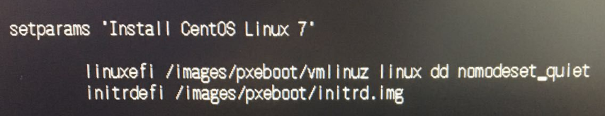
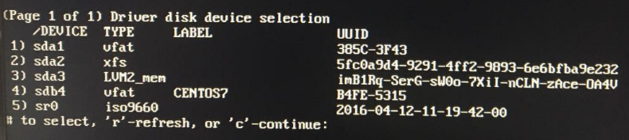
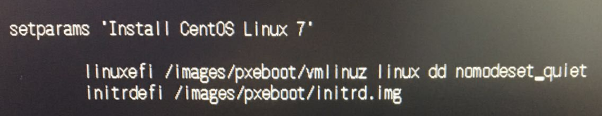
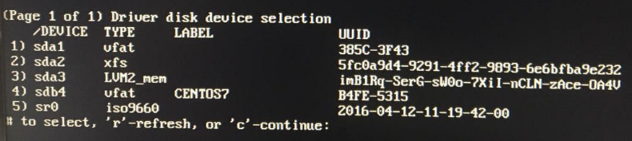

问题：U盘安装长时间停留在 starting dracut initqueue hook
安装引导界面按 “e” 进行编辑，修改完成执行 “Ctrl + X”

1 | 默认信息： |
在显示信息中找到优盘设备，比如：sdb4，记住此设备路径

重启，再次按 “e” 进入引导界面，执行编辑，并在修改完成后执行 “Ctrl + X”
1 | setparams 'Install CentOS Linux 7' |
- 按需求开始正常安装
安装引导界面按 “e” 进行编辑，修改完成执行 “Ctrl + X”

1 | 默认信息： |
在显示信息中找到优盘设备，比如：sdb4，记住此设备路径

重启，再次按 “e” 进入引导界面，执行编辑，并在修改完成后执行 “Ctrl + X”
1 | setparams 'Install CentOS Linux 7' |